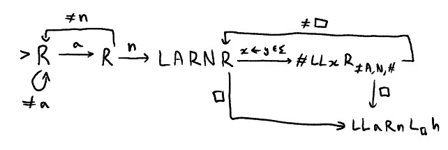

|
 |
||
|
Omnipotence to read the following poem, let input string w = "angle". let string w' be the output when the following Turing Machine, Reconfigure, is run on input w.  Notes: Let Σ be the English alphabet. When x is used, it is shorthand for "one state per symbol." Thus in Reconfigure there exist separate states to handle the copying of character 'a', 'b', 'c', and so on. Description of Reconfigure:
Impartiality makes me salivate, the ability to understand actions from afar without taking them myself.
claim every victory, remember only the times I was kind and clever, never idle or vicious.
My mind tries to attribute those impacts to others, peel the weight from my skin and justify the doing, but I've tried every w and found none satisfactory.
Allow me to disembody, seek understanding in the way I react and respond, w' my personhood from the intentions I make manifest rather than the mass of contradictions that swirls inside.
It is a torment to wonder if I am the thing my consciousness tells me, accept the image shielding the horrors of complexity below or allow it to rip and tear until something else emerges, changed, its incongruity unsettling all I have amassed for myself. |
|||
|
|||